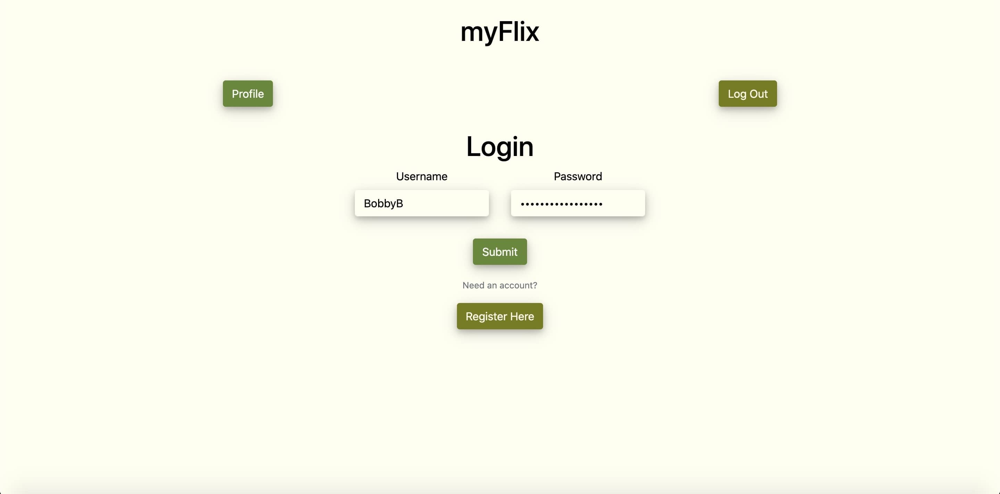

myFlix
MongoDB | Express | React | Node.js | Redux | JSX | SCSS | Parcel | JavaScript | Bootstrap
Check out the movie app! | GitHub | API
(please note myFlix takes a nap when not in use. If it takes longer than 30 seconds to load please try again.)
The Challenge
The myFlix web application is a highly scalable single page application designed for movie lovers. This React project provides the user with an opportunity to create an account, and then log in and browse a selection of movies. While looking through movies, users can add titles to a list of favorites and remove them from that list at any time. The myFlix app also provides users with a secure login process and a well protected back end database that hashes all sensitive data provided by a user.
Tech Stack Explanation
When considering a method for developing myFlix, React was an easy choice. React's modular components and flexibility made it easier to reuse components and features throughout the application. In conjunction with Parcel, Node.js, Express, and MongoDB, React provides some advanced features. Overall, the MERN stack offered up a powerful method for setting up this full front-to-back end project in a relatively short timeframe.
The Process
Designing and developing the myFlix application was an enjoyable experience. I first took user stories and converted them into sketched wireframes. These wireframes acted as a guide for visualizing coding concepts before implementing them. I believe that visualizing the needs of an application provides a better understanding of the process required to implement necessary features. Wireframes also provide a great way to flesh out any desired (or undesired) user experience (UX) features and functionality.


Lessons Learned
I learned a lot about both backend and frontend programming while creating myFlix. I enjoyed the structured nature of both SQL and NoSQL databases and grew to appreciate the importance of good API documentation. Even when a project uses a backend developed by the same creator, it's always important to remember you won't be the last and only person to work on a project. Knowing what a project's endpoints do, and knowing what they expect when a user sends a request was a vital portion of this project.